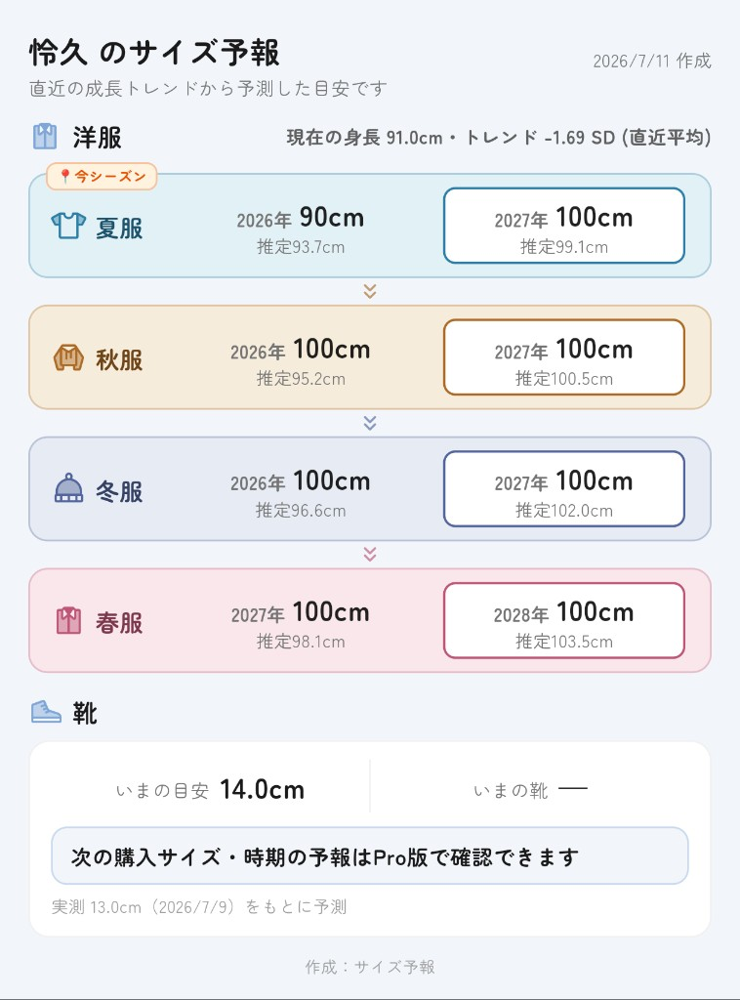

サイズ予報
成長曲線で、服と靴のサイズを予報
身長・体重・足長をさっと記録するだけ。「次はいつ、何cmを買えばいい？」に、アプリが答えます。
App Store：準備中
Google Play：準備中
成長曲線で、服と靴のサイズを予報
身長・体重・足長をさっと記録するだけ。「次はいつ、何cmを買えばいい？」に、アプリが答えます。
成長曲線・サイズ予報・健診レポートまで、ひとつのアプリで。残り2枚は準備でき次第差し替えます。
成長曲線（準備中）

サイズ予報
受診レポート（準備中）
厚生労働省・文部科学省の公的データ（2000年度）に基づく成長曲線に、身長・体重をプロット。SDスコアの推移もひと目でわかります。
いまの成長トレンドから、来シーズンに着るサイズ（80・90・100…）を先読み。セールでの「来年用の買い物」に自信が持てます。
足長の実測からいまの目安を表示。Pro版なら「次に買うサイズと時期」まで先読みできます（無料版では表示されません）。
健診や小児科の受診時にそのまま見せられる、A4・1枚のレポートを出力。成長の経過説明がスムーズに。
毎年のお誕生日の写真と身長・体重を、成長の記録としてアルバムに残せます。
ファイル書き出しによる手動バックアップのほか、Pro版ではオンライン自動バックアップに対応します。
登録時にアイコンとテーマカラーを選べます。きょうだいがいる家庭でも、ひと目で誰の画面かわかります。
早産児など出産予定日ベースの修正月齢に対応。成長曲線の横軸を、暦月齢と修正月齢で切り替えられます。
| 機能 | 無料版 | Pro版 |
|---|---|---|
| 成長曲線・SDスコア | ○ | ○ |
| 洋服サイズの目安 | ○ | ○ |
| 靴のいまの目安 | ○ | ○ |
| 靴の次の購入予報 | — | ○ |
| 受診レポート（PDF） | ○ | ○ |
| お誕生日アルバム | ○ | ○ |
| 手動バックアップ（書き出し） | ○ | ○ |
| オンライン自動バックアップ | — | ○ |
| 修正月齢表示 | ○ | ○ |
| お子様ごとのアイコン・テーマカラー | ○ | ○ |
| 広告 | 表示あり | 非表示 |
価格は消費税込み。お支払いは App Store / Google Play のアカウントに請求されます。
サブスクリプションは自動更新されます。更新日の24時間前までに、各ストアの
アカウント設定から解約しない限り、同じ期間・同じ価格で更新されます。
解約手続きは App Store または Google Play の「定期購入」設定から行えます。
成長曲線の記録・洋服サイズの目安・PDFレポート・お誕生日アルバムなど、主要な機能は無料でお使いいただけます。靴の次の購入予報やオンライン自動バックアップはPro版の機能です。
公的な成長曲線とお子様ご自身の記録をもとにした統計的な目安です。成長には個人差がありますので、あくまで買い物の参考としてご活用ください。
基本はお使いの端末の中に保存されます。Pro版のオンライン自動バックアップを有効にした場合のみ、暗号化された通信でクラウドに保存されます。詳しくはプライバシーポリシーをご覧ください。
早産などで生まれたお子様は、出産予定日をもとにした修正月齢で成長を見ることがあります。登録時に設定でき、成長曲線の表示を暦月齢と修正月齢で切り替えられます。
本アプリは医療機器ではなく、診断には使えません。発育・健康について気になることがある場合は、健診やかかりつけの小児科医・保健師にご相談ください。
本アプリは保護者がお子様の成長を記録・整理するためのツールであり、医療機器ではありません。 表示される数値は統計的な基準に基づく目安です。お子様の発育・健康について気になることが ある場合は、乳幼児健診やかかりつけの小児科医・保健師にご相談ください。
MIYA APPS（個人事業主）が開発・運営しています。
子育て中の保護者目線で、「服と靴の買い替えタイミングがわからない」という日常の悩みを、成長記録アプリで解決したいと考えて作りました。
お問い合わせ：お問い合わせページ
プライバシー：プライバシーポリシー
ご意見・ご要望をお聞かせください
お問い合わせページへ